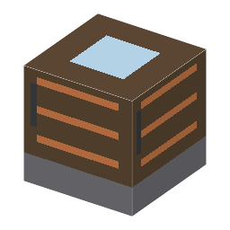

手回しの冷凍機（パーキンス式）
Hand-Cranked Ice Machine (Perkins)・ブロック・Heat
仮（まだ本物どおりでない所がある）
本当の歴史：[3-22] 蒸気圧縮の冷凍サイクル（1834年）

説明
①子ども ハンドルを回して、水を氷にする機械。冷たさを作るのでなく、熱を外へくみ出す「熱のポンプ」。
②学生 銅4＋手押しポンプ [5-01]＋鉄3で作る。冷媒（ジエチルエーテル）を持って右クリックで入れる、水バケツで水を入れる、素手で右クリックしてハンドルを16回まわすと氷1。冷媒がないと冷えない。エーテルは燃えやすく、ときどきもれて失う（事故）。 フロン [2-48] も冷媒になる（もれないが、オゾン層が減る）。
③大人 圧縮（気体の冷媒を押し縮める）→ 放熱（銅の管で熱を外へ、液になる）→ 膨張弁（細い弁で圧力を下げる）→ 蒸発（液が気体になるとき、まわりから熱をうばう＝気化熱）→ また圧縮。今の冷蔵庫・エアコンと同じ回路。
④ガチ 1834年、アメリカ生まれでロンドンにいたパーキンスが、エーテルで閉じた回路の冷凍機の特許をとった。試作機は少しの氷を作ったが、商売にはならなかった。よく「冷蔵庫はリンデ（1876）の発明」と言われるが、リンデはアンモニアで実用の機械にした人で、しくみはパーキンスが先。
作り方
使い道
（このアイテムを使うレシピは無い）